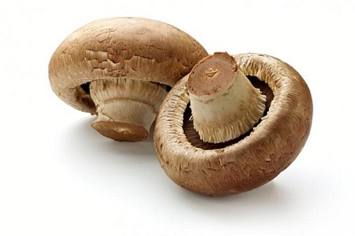

Enoki
Where to find
The Enoki is a strange looking fungus. A tight cluster of long stalks and small caps, these odd guys are usually found growing out of tree stumps in China, though their wild-grown relatives look much more like your mushroom. The CO2 rich environment and lack of light lead to the long, pale stems, while their wild counterparts are reddish, with wider stalks.
How to cook
Enoki have a delicate, light, fruity flavor and are usually served in Asian cuisine, like soups or salads, either cooked or raw. They're treated like a noodle, as they don't provide much flavor, but can be a vessel of flavor and texture. Saute them or serve them in a cold salad, you can't go wrong with these stringy boys.